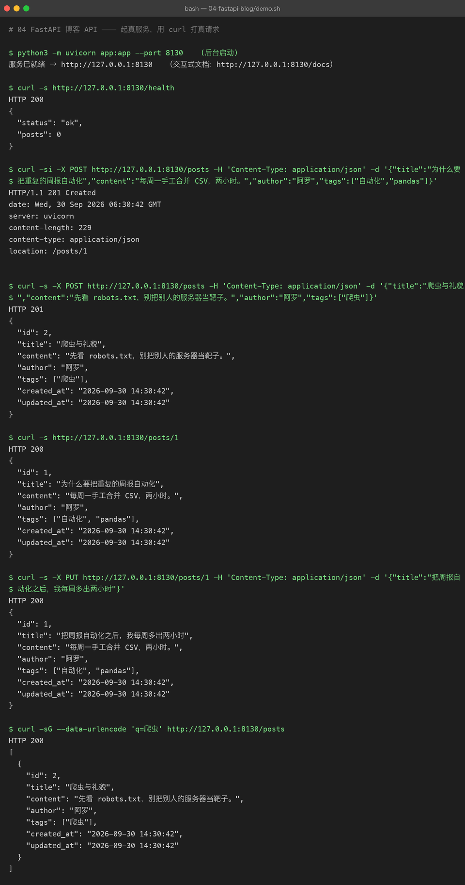
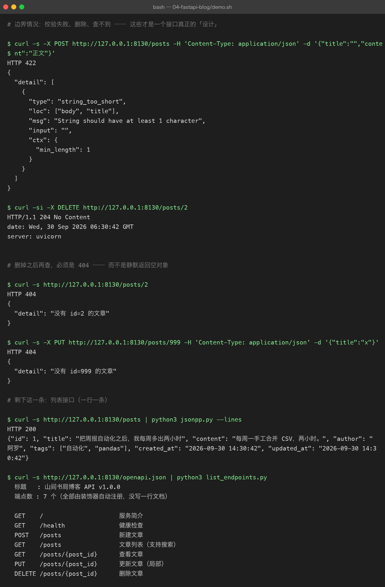
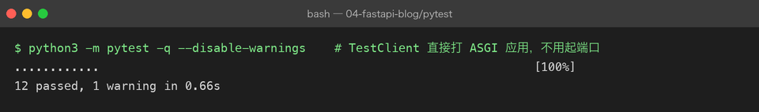

04 FastAPI 博客 API
难度 ●●○ 进阶 ｜ 预计 1 周 ｜ 依赖 fastapi、uvicorn、pytest 上级目录：练手项目总览
你要做的东西
一个 REST 风格的博客 API：文章的增删改查 + 搜索 + 参数校验 + 自动文档 + 单元测试。
对写 Java 的人来说这个项目最舒服——它和你熟悉的那套东西几乎一一对应，只是代码量少一个数量级：
| Spring Boot | FastAPI（本项目） |
|---|---|
@RestController | app = FastAPI(...) |
@GetMapping("/posts/{id}") | @app.get("/posts/{post_id}") |
@PathVariable Long id | def read(post_id: int) ← 类型即校验 |
@RequestBody @Valid PostDTO | def create(payload: PostCreate) |
@ResponseStatus(HttpStatus.CREATED) | status_code=201 |
throw new ResponseStatusException(404) | raise HTTPException(404, ...) |
@Autowired PostRepository | store: PostStore = Depends(get_store) |
@PostConstruct / @PreDestroy | lifespan 异步上下文管理器 |
| springdoc + Swagger UI（要加依赖） | /docs（自带，不用引任何东西） |
@SpringBootTest + MockMvc | TestClient(app) |
| JPA / MyBatis | 这里用标准库 sqlite3（故意不上 ORM） |
先看结果
截图 A：主线流程（起真服务 → 增 → 查 → 改 → 搜）

几个值得盯住的点：
HTTP/1.1 201 Created+location: /posts/1创建成功不只是返回 201，还要用Location头告诉客户端「新资源在哪儿」。这是 REST 的约定，很多教程会漏掉。$ curl -sG --data-urlencode 'q=爬虫' ...第一次写这个 demo 时，我直接写curl ".../posts?q=爬虫"，uvicorn 回了Invalid HTTP request received.——URL 里的中文必须 percent-encode，-G --data-urlencode就是干这个的。PUT只传了title，返回体里content/author/tags原封不动 这证明后端做的是局部更新（PATCH语义），而不是「用默认值把没传的字段覆盖掉」。这是新手最容易写错的地方。
截图 B：边界情况 + 自动文档

HTTP 422+ 结构化的detail空标题不是 500，也不是 400，而是 422 Unprocessable Content，并且告诉你是哪个字段（loc: ["body","title"]）因为什么原因（string_too_short/min_length: 1）失败。你没写一行校验代码——这就是 pydantic + 类型注解的回报。HTTP/1.1 204 No Content：删除成功不返回 body（也不该返回）。- 删掉之后再查 →
HTTP 404+{"detail": "没有 id=2 的文章"}注意这个 404 是你自己raise的。如果不写这段判断，接口会对不存在的 id 返回200 null——这是最典型的 REST 设计错误。 - 最后一段：
openapi.json里列出 7 个端点，标题、summary 全在 这些不是手写的文档，是装饰器自动注册的。所以/docs页面永远和代码同步——不会过期。
测试（pytest -q，12 个用例）

TestClient 直接打 ASGI 应用，不需要真的监听端口，所以 12 个用例 0.66 秒跑完。
你要学到的 Python
| 知识点 | 在本项目里落在哪 |
|---|---|
| 类型注解 + pydantic 校验 | PostCreate / PostUpdate 的 Field(...) 约束 |
| 装饰器路由 | @app.get / @app.post / @app.put / @app.delete |
| 依赖注入 | Depends(get_store)，对应 Spring 的 @Autowired |
lifespan 生命周期 | 启动时建连接、关闭时释放 |
| HTTP 状态码语义 | 201 + Location / 204 / 404 / 422 |
HTTPException | 把业务判断映射成协议层错误 |
| 参数校验（query） | Query(default=20, ge=1, le=100) |
sqlite3 参数化查询 | execute(sql, (a, b))，不拼字符串 |
| 上下文管理器 | with TestClient(app) as c 触发 lifespan |
| pytest 参数化 | @pytest.mark.parametrize 一次测 4 种非法输入 |
include_router 之外的自动文档 | /openapi.json 是真数据源，不是渲染图 |
怎么跑起来
cd python-practice/04-fastapi-blog
# 装依赖
python3 -m venv .venv && source .venv/bin/activate
pip install -r ../requirements.txt
# 起服务（--reload 会改代码自动重启，开发时很香）
python3 -m uvicorn app:app --reload --port 8130
# 浏览器打开 http://127.0.0.1:8130/docs ← 可以直接在页面上点按钮发请求
# 跑测试
python3 -m pytest -q
# 跑演示（会自己起服务、打一轮请求、最后关掉）
bash demo.sh本机如果用
curl访问127.0.0.1遇到代理问题，加--noproxy '*'。演示脚本里已经带了。
代码结构
04-fastapi-blog/
├── app.py # 路由 + pydantic 模型 + 依赖注入（≈ Controller + DTO）
├── store.py # SQLite 数据访问（≈ Repository），所有 SQL 只在这里出现
├── test_api.py # 12 个 pytest 用例
├── jsonpp.py # 把 curl 返回的 JSON 美化打印（不转义中文）
├── list_endpoints.py # 从 openapi.json 里读端点清单
├── demo.sh # 起服务 + curl 打一轮 + 关服务（输出就是截图）
└── assets/ # 截图 + run.txt + tests.txt（原始输出都入库）关键代码拆解
① 校验是「声明」出来的，不是「if 出来」的
class PostCreate(BaseModel):
title: str = Field(min_length=1, max_length=120, description="标题，1~120 字")
content: str = Field(min_length=1, description="正文，不能为空")
tags: list[str] = Field(default_factory=list, max_length=TAGS_MAX)写下这些约束之后，FastAPI 自动帮你：请求体不是合法 JSON → 422；title 是空串 → 422；tags 有 6 个 → 422。而且 /docs 页面上的参数说明也是从这些 Field 生成的。
对比一下手写 Java 的样子：@NotBlank @Size(min = 1, max = 120) private String title;——思路完全一样，区别只在 FastAPI 把「校验」和「文档」都绑在同一处声明上。
② 404 是你自己抛的
post = store.get(post_id)
if post is None:
raise HTTPException(status_code=404, detail=f"没有 id={post_id} 的文章")不写这个判断，接口就会返回 200 null。 这不是「能用」，这是错的——客户端无法区分「这个 id 不存在」和「存在但是空的」。
③ SQL 永远用占位符
self._conn.execute(
"INSERT INTO posts (title, content, author, tags, created_at, updated_at)"
" VALUES (?, ?, ?, ?, ?, ?)",
(title, content, author, json.dumps(tags, ensure_ascii=False), now, now),
)? 占位符 + 参数元组。绝不要写成：
f"INSERT INTO posts (title) VALUES ('{title}')" # ← 注入漏洞，别这么写后者只要有人把标题写成 '); DROP TABLE posts; --，你的表就没了。
④ 局部更新要显式判断「传了没有」
fields: dict[str, object] = {}
if title is not None:
fields["title"] = title
...
if fields:
assignments = ", ".join(f"{k} = ?" for k in fields)
self._conn.execute(f"UPDATE posts SET {assignments} WHERE id = ?", (*fields.values(), post_id))这里 f"{k} = ?" 里拼的是列名，而且列名来自代码里写死的白名单（不来自用户输入），所以安全。拼列名和拼值是两回事——值必须走参数。
⑤ 测试用例之间必须互不干扰
@pytest.fixture()
def client():
with TestClient(app) as c:
c.app.state.store.clear() # 每个用例从干净的表开始
yield c不写 clear() 的话，test_create_returns_201_and_location 里断言的 id == 1 会在别人先跑过之后变成 id == 2——这种「单独跑能过、一起跑就挂」的测试最恶心。
常见坑
| 坑 | 现象 | 怎么破 |
|---|---|---|
| 忘了返回 404 | 不存在的 id 返回 200 null | raise HTTPException(404, ...) |
| SQL 字符串拼接 | 注入漏洞 | ? 占位 + 参数元组 |
sqlite3 跨线程 | 报 SQLite objects created in a thread... | check_same_thread=False（练习级够用） |
| URL 带中文 | uvicorn 回 Invalid HTTP request received. | curl -G --data-urlencode 'q=中文' |
| 测试互相污染 | 单独跑过、一起跑挂 | autouse fixture 里清表 |
| 在 import 时才读环境变量 | 测试改不动 DB 路径 | 必须在 import app 之前设 BLOG_DB |
用 json.tool 看响应 | 中文变 \uXXXX | 自己写 3 行 ensure_ascii=False |
验收标准（做完自检）
- [ ]
curl -si -X POST /posts返回 201，响应头里有location: /posts/N - [ ] 空标题提交返回 422，且
detail[0].loc == ["body","title"] - [ ]
PUT /posts/{id}只传title时，响应体里的content不变 - [ ] 删除返回 204 且无响应体；删除后再查返回 404
- [ ]
GET /posts?limit=0返回 422（ge=1生效） - [ ] 浏览器打开
/docs能看到 7 个端点，且可以直接点「Try it out」发请求 - [ ]
pytest -q全绿（12 个用例）
进阶挑战
- 加分页响应体 —— 现在分页信息放在
X-Total-Count响应头里。改成返回{"total": n, "items": [...]}，并解释两种设计的取舍。 - 加用户与鉴权 —— 引入
Authorization: Bearer <token>，只有作者本人能改/删自己的文章（练习Depends链式依赖）。 - 换成 SQLAlchemy —— 体会 ORM 帮你省了什么，又藏起了什么（尤其是 N+1 查询）。
- 加数据库迁移 —— 用简单的
user_version或者alembic管理表结构变更。 - 加限流 —— 用内存计数器限制每 IP 每分钟的写请求数，返回 429。
- 补齐测试 —— 现在没测并发和超长输入。加上
title长度 121 的边界用例、以及limit=101的 422 用例。 - 打包成镜像 —— 写
Dockerfile（python:3.13-slim+uvicorn），把blog.db用 volume 挂出来。